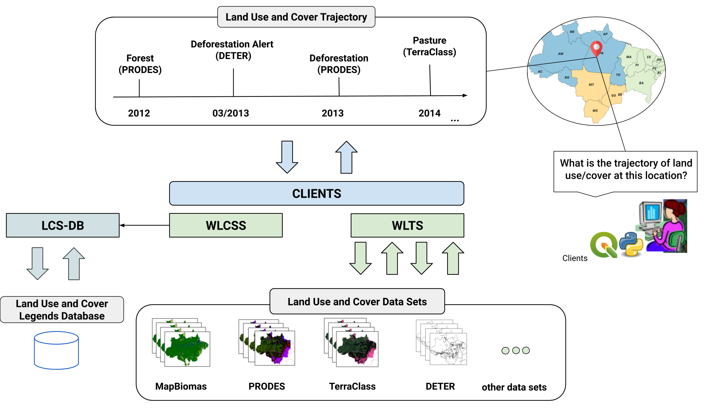

Serviços e Bibliotecas relacionadas ao WLTS
LCCS-DB e LCCS-WS
O LCCS-DB (Land Cover Classification System Database) fornece um modelo de dados que representa os diversos sistemas de classificação em uso e suas respectivas classes. O LCCS-DB tem por objetivo disponibilizar um repositório de dados para facilitar o acesso e visualização das classes e suas simbologias em cada sistema de classificação empregados nos projetos que disponibilizam mapas de uso e cobertura da terra no Brasil: Prodes, Deter, TerraClass e MapBiomas. Além disto, o LCCS-DB permite realizar o mapeamento entre as classes dos sistemas de classificação de maneira a simplificar análise conjunta dos dados. O repositório do LCCS-DB está disponível no GitHub do BDC.
O LCCS-WS (Land Cover Classification System Web Service Service) é um serviço web que utiliza o modelo de dados fornecido pelo pacote LCCS-DB. LCCS-WS suporta as seguintes operações:
/classification_systems/classification_system/<*system_id*>/classification_system/<*system_id*>/classes/classification_system/<*system_id*>/classes/<*class_id*>/mappings/<*system_id*>/mappings/<*system_id_source*>/<*system_id_target*>/classification_system/<*system_id*>/styles/classification_system/<*system_id*>/styles/<*style_id*>
Esses serviços visam auxiliar na reusabilidade dos mapas de uso e cobertura do solo, simplificando o acesso e a análise de trajetórias. Buscamos auxiliar nas questões de interoperabilidade semânticas, nas diferenças espaciais e temporais dos dados de forma transparente para o usuário.
{kind=link}
{kind=link}